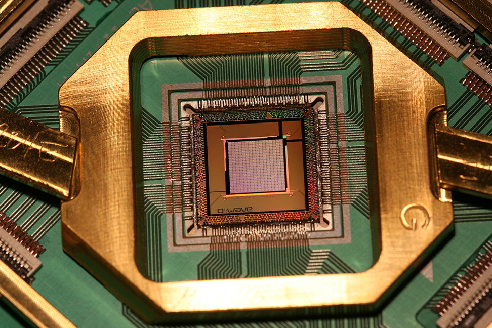
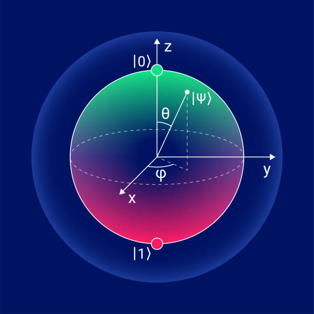
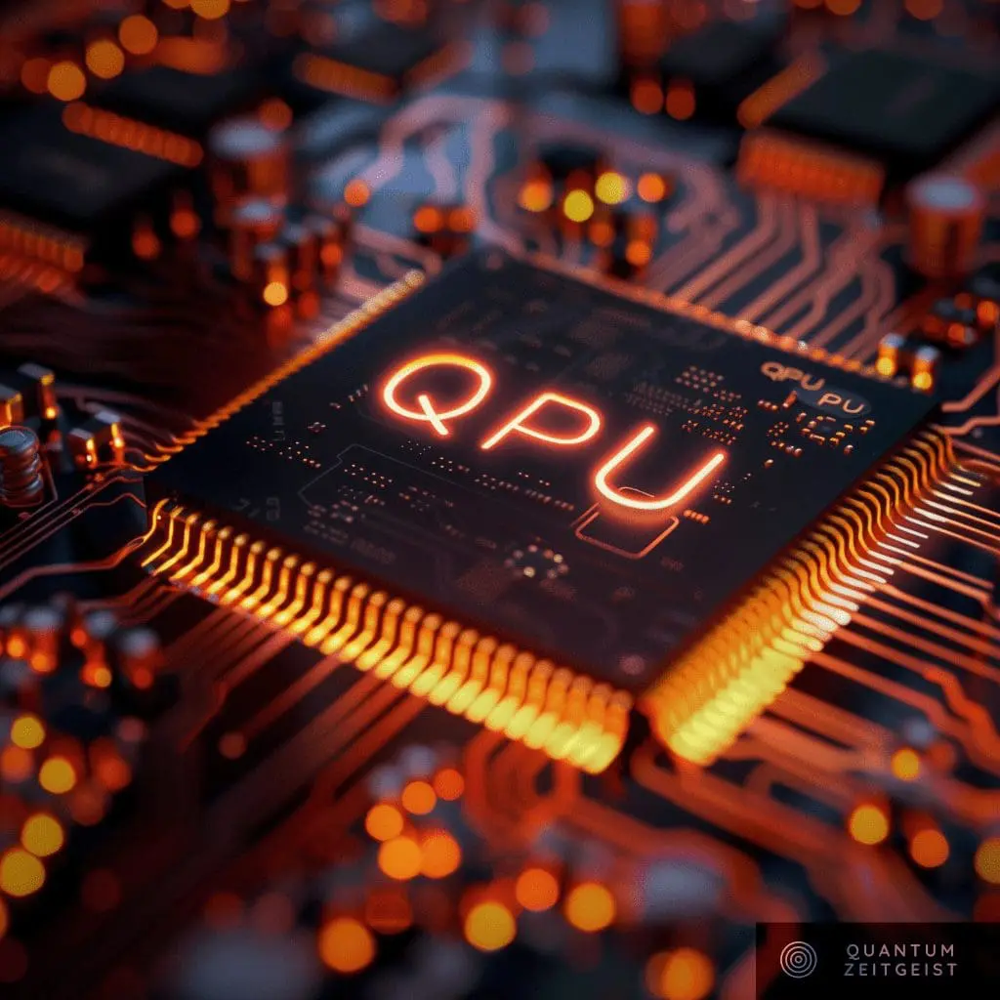
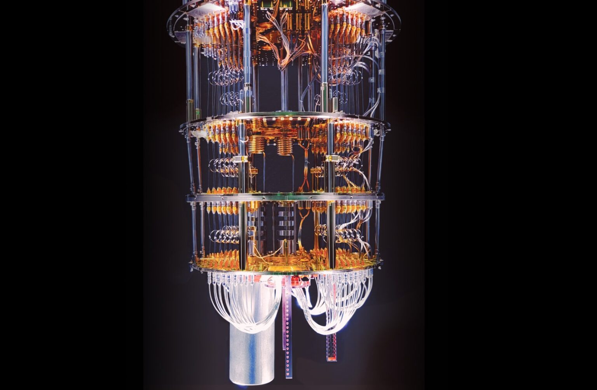

Svaki dan tehnologija sve više napreduje. Od računala koja su zauzimala cijele prostorije do stolnih računala, laptopa i mobitela.
Procesori su bili važan dio tog razvoja i zaslužni su za pojednostavljivanje i proširenje računala i razvitak ostalih tehnologija.
Razvojem tehnologije razvijaju se i njihovi procesori i poboljšava se njihovo djelovanje. Najnoviji napredak u području procesora predstavljaju upravo kvantni procesori koji mogu znatno unaprijediti kvantno računarstvo i eksponencijalno unaprijediti mnoga znanstvena područja.
Na ovoj stranici objasnit ćemo što su kvantni procesori, kako funkcioniraju, kako su sastavljeni i koje mogu biti njihove primjene u svakodnevnom životu.

Kvantni procesor je mozak kvantnog računala koji koristi ponašanje čestica kao fotona i elektrona kako bi računalo drukčije od ostalih tradicionalnih procesora, potencijalno računajući neke zadatke brže. Kraće se zapisuje kao QPU.
U budućnosti može ljudima pomoći u područjima umjetne inteligencije i strojnog učenja , klimatskih promjena, farmaceutske industrije, kriptografije, kemije, materijalnih znanosti.... Ima mnogo razlika u odnosu na današnje procesore na temelju toga kako procesira podatke, na kojim granama fizike se temelji, za što je koristan...
Kvantni procesor sadrži kvantni čip veličine slične veličini čipa standardnog računala. Taj čip se sadrži od kubita izloženih u različitim konfiguracijama i struktura koje drže te kubite na mjestu. Čipovi se moraju držati u hladnjaku za razrjeđivanje na temperaturama blizu apsolutne nule. Kvantni procesori također sadrže upravljačku elektroniku i klasični računalni hardver, neki od tih komponenata stoje na sobnoj temperaturi, dok ostai leže u hladnjaku za razrjeđivanje blizu apsolutne nule .
Jedan od najvažnijih pojmova vezanih za kvantne procesore su, već spomenuti kubiti - kvantni bitovi koji mogu predstavljati mnogo kvantnih stanja. Mogu spremati podatke kao nule i jedinice, ali i kao kombinaciju nula i jedinica, to jest kažemo da imaju superpoziciju. Slično kao kazaklje na satu, kubiti pokazuju na kvantna stanja, koja se mogu opisati kao točke u Blochovoj sferi.
Matematički, bilo koje stanje kubita može se napisati kao:
|ψ⟩ = α|0⟩ + β|1⟩
gdje su α i β kompleksni brojevi koji zadovoljavaju uvjet normalizacije |α|^2 + |β|^2 = 1
Blochova sfera je jedinična sfera čiji su sjeverni i južni pol osnovna stanja 0 i 1. Kako bismo pronašli točku na Blochovoj sferi koja predstavlja stanje |ψ⟩ koristimo sljedeće formule:
x = 2Re(αβ^*)
y = 2Im(αβ^*)
z = |α|^2 – |β|^2
Kada smo našli x,y i z možemo locirati točku T(x,y,z) na Blochovoj sferi.

Superpozicija omogućuje skupu kubita kodirati ogromnu količinu informacija,na primjer 50 kubita može predstavljati kvadrilijon mogućih stanja od jednom. Znanstvenici proizvode nove načine za mjerenje snage kvantnih procesora, iako se snaga kvantnog procesora često se navodi kao količina kubita koju ima
Vrste kubita uključuju:
Kubiti se uglavnom proizvode manipuliranjem i mjerenjem kvantnih čestica. Danas se većinom proizvode superkondukcijski kubiti, korištenjem jednog ili više malih metalnih spojeva koje nazivamo Josephsonov spoj. Kvantna računala roja koriste ovaj pristup, izoliraju elektrone tako što ih hlade do temperature blizu apsolutne nule, pri čemu koriste snažne hladnjake koji troše mnogo energije.
Alternativno umjesto elektrona mogu se koristiti fotoni, tim pristupom, ne trebaju se koristiti snažni i skupi i energetski neodrživi hladnjaci ali su potrebni sofisticirani laseri te uređaji za razdvajanje snopa za upravljanje fotonima.
Kvantno računarstvo je relativna nova grana znanosti,te još ne znamo koja će vrsta kubita u kvantnim procesorima biti rasprostranjena, ali znanstvenici odmicanjem vremena pronalaze što više načina za proizvodnju kubita .
Kvantni procesori su dizajnirani da procesiraju kvantne algoritme bolje od najboljih superračunala. Kvantni procesori nisu zamišljeni da zamjene sadašnje procesore, nego da budu integrirani u HCP sisteme uz sadašnje procesore. U kvantnom računalu sve vrste procesora funkcioniraju drukčije i koriste se za procesiranje različitih vrsta proračuna:

Kvantno računarstvo razlikuje se od običnog računalstva, značajke običnog računarstva su:
Značajke kvantnog računarstva su:
Kvantni procesori ne obrađuju matematičke zadatke kao obična računala. Kvantni strujni krugovi sačinjeni od kubita procesiraju mnoge skupove podataka istovremeno, dok klasična računala računaju sve korake računa koristeći logička pravila, što zahtjeva više vremena. Kvantna tehnologija koristi čestice znane kao molekularni kubit ili hardver koji oponaša ponašanje čestica kako bi izvršili račune koje binarni bitovi ne mogu.
Četiri glavna principa koja to omogućuju su:

Klasični procesori će zbog svoje brzine u odnosu na kvante procesore nastavljati rješavati većinu ljudskih problema. No iako su klasični procesori brži od kvantnih to ne znači da kvantni procesori ne mogu rješavati neke probleme bolje od klasičnih. U budućnosti kvantni procesori mogu biti bitni za rješavanje nekih jako teških problema, uključujući onih koji su neizvedivi čak i za HCP. Neki primjeri područja gdje se kvantni procesori mogu primjenjivati su:
Kvantna računala sposobna simulirati molekulska ponašanja i biokemijske reakcije mogu ubrzati istraživanje i razvoj novih vrsta lijekovaIstraživanje materijala: Mnogi problemi istraživanja materijala su po sebi kvantni. Kvantna pomoć može ovdje pomoći u mnogim stvarima, od razumijevanja tvari do problema skladištenja energije,...
Kemija: Ublažavanje opasnih nusprodukata nekih kemijskih reakcija. Kvantno računarstvo može poboljšati katalizator koji omogućuje petrokemijske alternative ili bolje procese za raspad ugljika, ključne za borbu protiv klimatskih promjena
Optimizacijski problemi: postoje mnogi optimizacijski problemi u području financija i logistike koje klasični procesori još ne mogu riješiti. Znanstvenici se nadaju da bi u budućnosti kvantni procesori mogli riješiti ove probleme.
Umjetna inteligencija i strojno učenje: Današnji svijet se sve više okreće prema umjetnoj inteligencija. Istražitelji testiranjem današnjih AI modela testiraju granice današnjih hardvera i troše gomilu energije. Postoje dokazi da bi neki postojeći kvanti algoritmi mogli procesirati skupove podataka na novi način, što bi moglo znatno ubrzati neke probleme strojnog učenja i unaprijediti naše znanje u tom području
Računalna sigurnost: Kvantni procesori mogli bi donijeti revoluciju za računalnu sigurnost. Zbog svoje mogućnosti faktorizacije velikih brojeva kvantni procesori mogu razbiti trenutne sigurnosne protokole, ali bi također bili u stanju stvoriti nove i još snažnije sigurnosne protokole od onih današnjih.
Zahvaljujući napredcima o znanjima o hardveru i softveru, očekuje se eksponencijalni porast u korištenju kvantnih procesora i kubita. Izmjerljivi kvantni procesori s milijunima kubita omogućit će kvantnim procesorima da budu neizostavan dio podaktovnih centara.
Inovacija kubita pri sobnoj temperaturi proširilo bi tehnologiju, da bude dostupna izvan specijaliziranih labaratorija , te bi redefinirala mnoge industrije i područja ljudskog života, te bi kvantno procesiranje moglo postati dio našeg svakodnevnog života, kao što je to danas obično procesiranje
Kvantni procesori nisu još sasvim proučeni i razvijeni, zahtijevaju posebne uvjete i nalaze se u posebnim labaratorijima ,glavni su dio kvantnog računala. Koriste se kubitima koji imaju svojstva superpozicije. Kvantni procesori imaju veliki potencijal uvelike promijeniti način ljudskog života i i uz daljnje napretke mogli bi se primjenjivati u mnogim područjima ljudskog djelovanja.